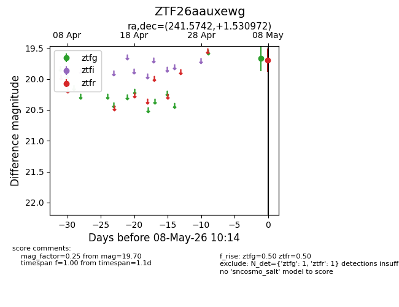
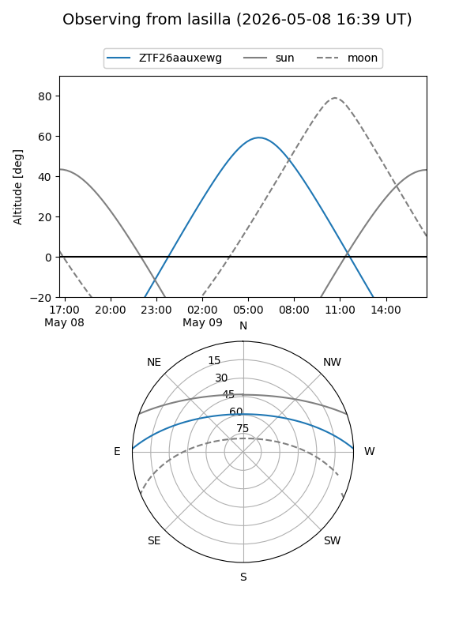
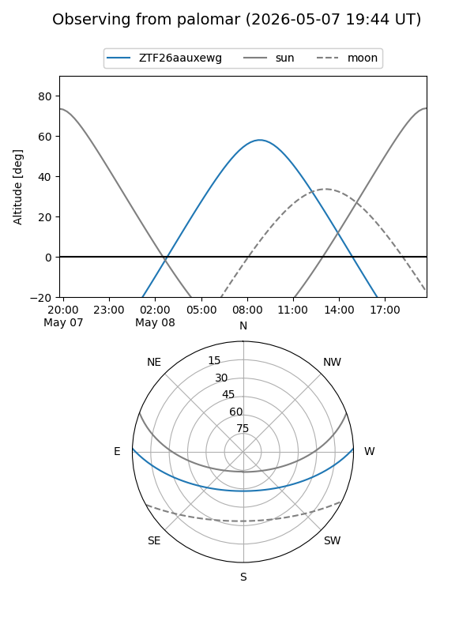

ZTF26aauxewg
Target ZTF26aauxewg at 2026-05-08 10:16
Aliases and brokers:
FINK: link
Lasair: link
ALeRCE: link
alt names
ZTF26aauxewg (ztf,fink_ztf)
Coordinates:
equatorial (ra, dec) = 241.5742,+1.53097
equatorial (HMS+DMS) = 16:06:17.81,+01:31:51.50
galactic (l, b) = (12.6915,+36.81226)
Flags:
Photometry:
last ztfg=19.67, ztfr=19.70
1 ztfg, 1 ztfr detections
Lightcurve

Visibility


Additional plots